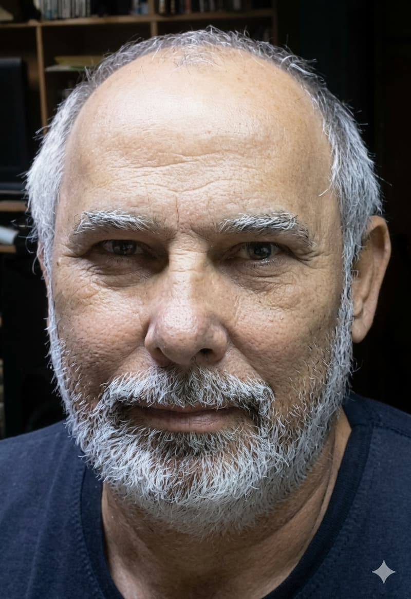

Página Inicial
Sobre Mim
Fernando Luis Ferreira é casado com Giselle Ferreira, pai de dois filhos: Fernando Junior e Giovanna Ferreira, mora em Campinas -SP. É estudante da BYU Pathway, no curso Desenvolvedor Web.
Foto

Cursos de Certificação Web
O total de créditos pelos cursos acima é 0